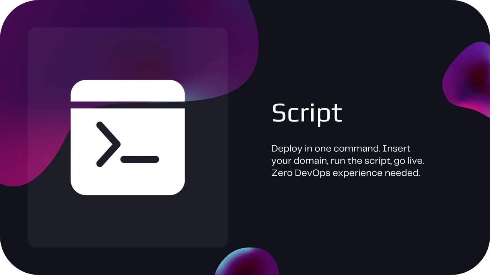

HD Video & Audio
Low-latency calls with noise suppression and adaptive media quality.
Low-latency peer-to-peer video meetings with collaboration built in. No media server required for direct connections, no recurring platform subscription.
Built-In Collaboration
Everything teams need for focused browser-based meetings, in a codebase you control.
Low-latency calls with noise suppression and adaptive media quality.
Present an application, browser tab, or full display during a call.
Exchange messages and files without leaving the meeting.
Draw and annotate together on an interactive shared canvas.
Bring ChatGPT assistance into the meeting experience.
Generate live meeting transcriptions directly in the room.
Record sessions from the browser for later review.
Create rooms programmatically through a documented API.
Fast Deployment
Deploy with Node.js or Docker and configure TURN for reliable NAT traversal.

Integrate Your Way
Embed a full meeting or launch calls from a lightweight floating widget.
Common Questions
Start Building
One-time purchase. Full source code. No recurring MiroTalk platform subscription.
Buy MiroTalk P2P